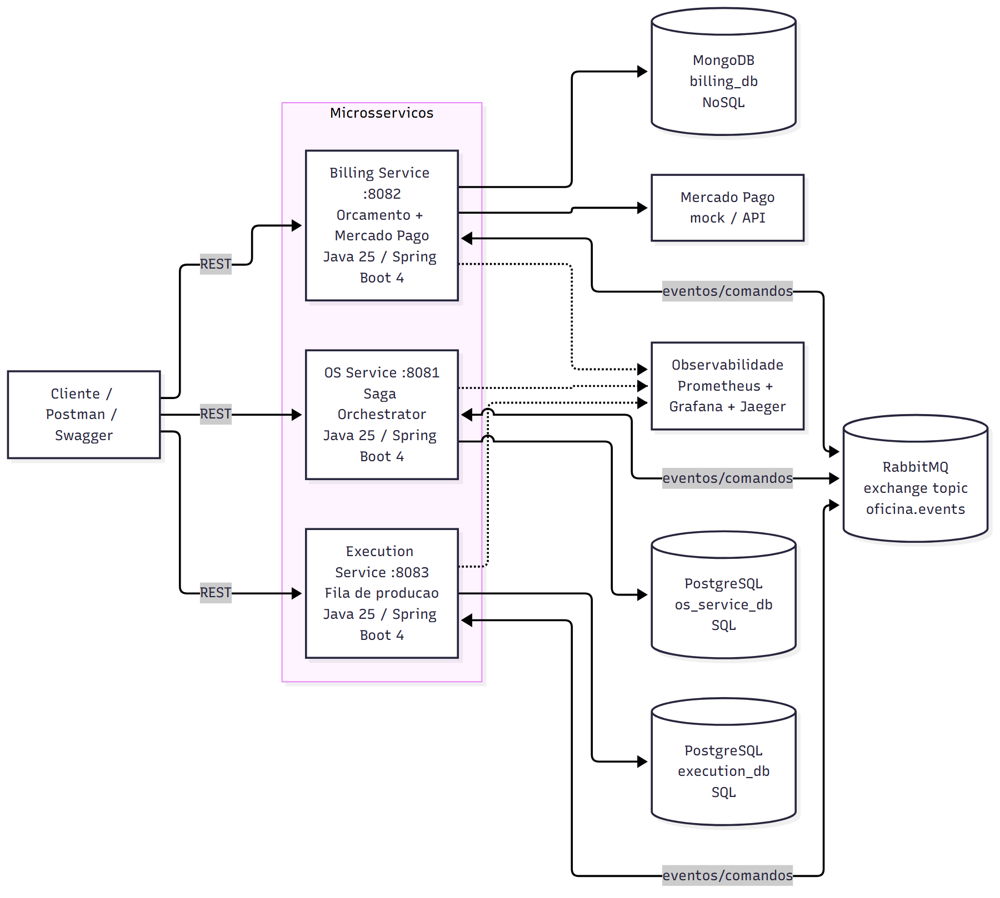
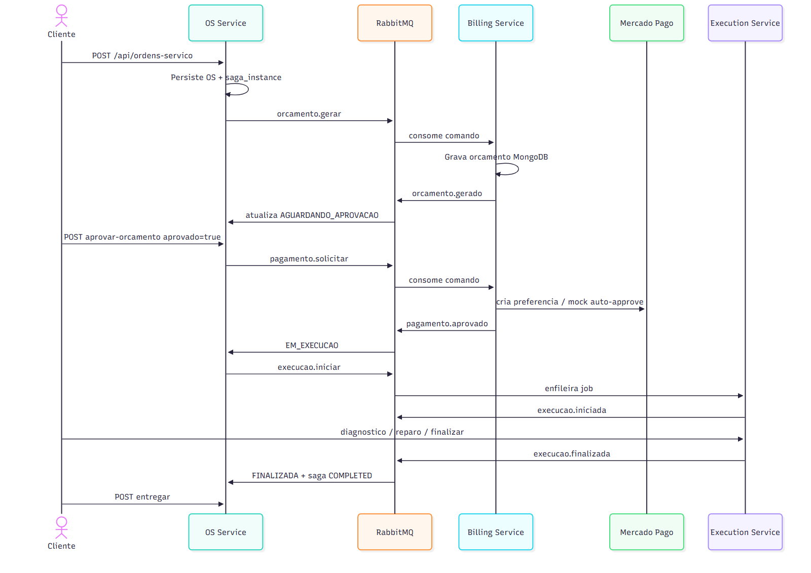
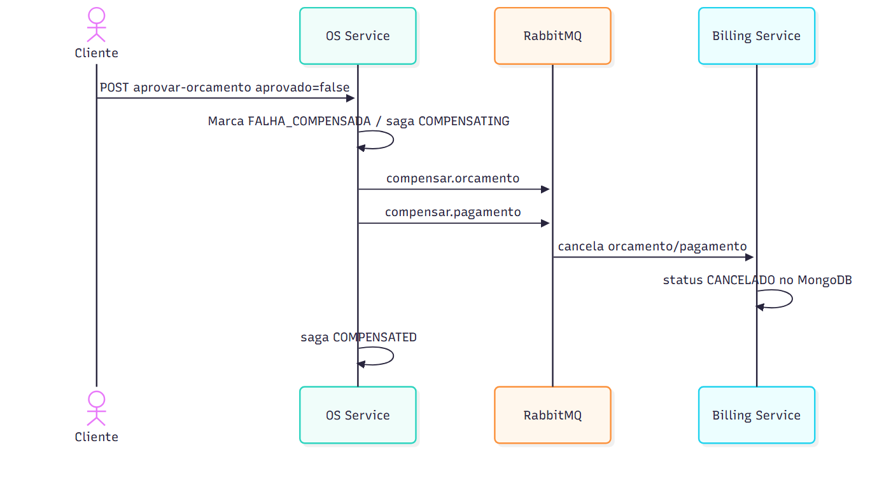

| Nome | Identificação / papel |
|---|---|
| Nicholas Spolti de Souza | Grupo 50 — aluno FIAP Pós Tech (SOAT) GitHub: Nicholasspoltidesouza |
Caso o grupo tenha mais integrantes, incluir nomes e RMs nesta tabela antes do envio final ao portal.
Cada microsserviço possui repositório, banco, Dockerfile, manifests Kubernetes e pipeline CI/CD próprios, conforme o enunciado.
| Componente | Repositório | Banco / porta |
|---|---|---|
| OS Service (orquestrador Saga) |
github.com/.../Fiap-Pos-Tech-Challenge-os-service | PostgreSQL · :8081 |
| Billing Service (orçamento + pagamento) |
github.com/.../Fiap-Pos-Tech-Challenge-billing-service | MongoDB · :8082 |
| Execution Service (fila de produção) |
github.com/.../Fiap-Pos-Tech-Challenge-execution-service | PostgreSQL · :8083 |
| Hub Fase 4 (Compose, demo, docs) |
github.com/.../Fiap-Pos-Tech-Challenge-fase4 | RabbitMQ + observabilidade |
Fiap-Pos-Tech-Challenge-fase4/docs/ROTEIRO_VIDEO_FASE4.md.
Deve mostrar: fluxo completo da OS, Saga com falha/compensação, deploy/CI de pelo menos um serviço e monitoramento.
Arquitetura distribuída com três microsserviços independentes, mensageria assíncrona (RabbitMQ), REST síncrono quando necessário, e bancos isolados (SQL + NoSQL).

Justificativa:
saga_instance (passo atual e status: RUNNING, COMPENSATING, COMPENSATED, COMPLETED).Comunicação: comandos/eventos no exchange topic oficina.events. Nenhum serviço acessa o banco de outro.


| Microsserviço | Por que separar | Tecnologias |
|---|---|---|
| OS Service | Dono do agregado Ordem de Serviço e do ciclo de vida; ponto natural para orquestrar o Saga e manter histórico/status. | Java 25, Spring Boot 4, JPA, PostgreSQL, RabbitMQ, Swagger, JaCoCo, Cucumber, K8s, GitHub Actions |
| Billing Service | Domínio financeiro distinto (orçamento/pagamento), integração Mercado Pago e documentos variáveis — ideal para MongoDB (requisito NoSQL). | Java 25, Spring Boot 4, MongoDB, Mercado Pago (mock/API), RabbitMQ, Swagger, testes + BDD, K8s, CI/CD |
| Execution Service | Chão de fábrica com fila e estados próprios (diagnóstico/reparo), escalável independentemente do atendimento/billing. | Java 25, Spring Boot 4, JPA, PostgreSQL, RabbitMQ, Swagger, testes + BDD, K8s, CI/CD |
SQL + NoSQL: PostgreSQL no OS e no Execution; MongoDB no Billing — atende o requisito obrigatório.
REST + mensageria: REST para APIs de cada serviço; RabbitMQ para desacoplar etapas do Saga.
Qualidade: testes unitários, BDD (Cucumber), cobertura JaCoCo ≥ 80%, Sonar no CI, deploy Kubernetes.
Fiap-Pos-Tech-Challenge-fase4:docker compose up --build.\run-demo.ps1 — executa fluxo feliz + compensação e inspeciona as três bases.Testes automatizados validados com mvn verify em cada microsserviço. Integração E2E validada na stack Docker (OS ↔ Billing ↔ Execution via RabbitMQ).